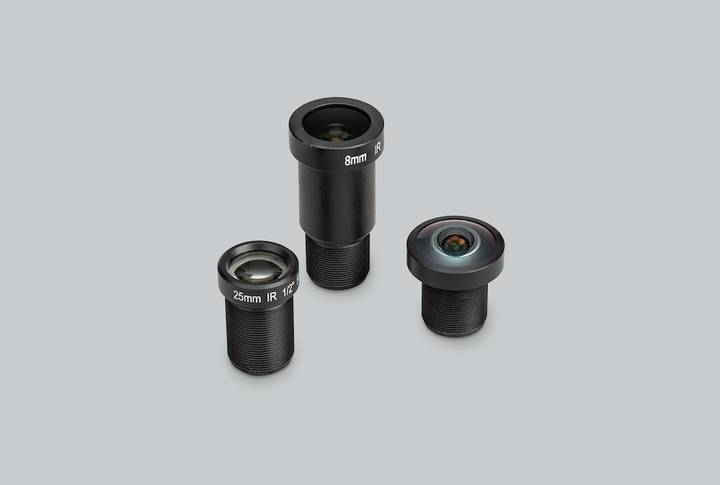

The following lenses are recommended for use with our HQ and GS cameras. The full terms are at https://www.example.com/terms.
While the HQ Camera is available in both C/CS- and M12-mount versions, the GS Camera is available only with a C/CS-mount.
We recommend two lenses, a 6 mm wide angle lens and a 16 mm telephoto lens manufactured by Optica Electronics Co. Ltd. These lenses are available from your nearest Authorised Reseller.
| 16 mm telephoto | 6 mm wide angle | ||
|---|---|---|---|
| Resolution | 10 MP | 3 MP | |
| Image format | 1" | 1/2" | |
| Aperture | F1.4 to F16 | F1.2 | |
| Mount | C | CS | |
| Field of View H°×V° (D°) | HQ | 22.2°×16.7° (27.8°) | 55°×45° (71°) |
| GS | 17.8°×13.4° (22.3) | 45°×34° (56°) | |
| Back focal length | 17.53 mm | 7.53 mm | |
| M.O.D. | 0.2m | 0.2m | |
| Dimensions | φ39×50 mm | φ30×34 mm | |

We recommend three lenses manufactured by Optotech Lens Works. These lenses are available from your nearest Authorised Reseller.
| 8 mm | 25 mm | Fish Eye | ||
|---|---|---|---|---|
| Resolution | 12 MP | 5 MP | 15 MP | |
| Image format | 1/1.7" | 1/2" | 1/2.3" | |
| Aperture | F1.8 | F2.4 | F2.5 | |
| Mount | M12 | |||
| HQ Field of View H°×V° (D°) | 49°×36° (62°) | 14.4°×10.9° (17.9)° | 140°×102.6° (184.6°) | |